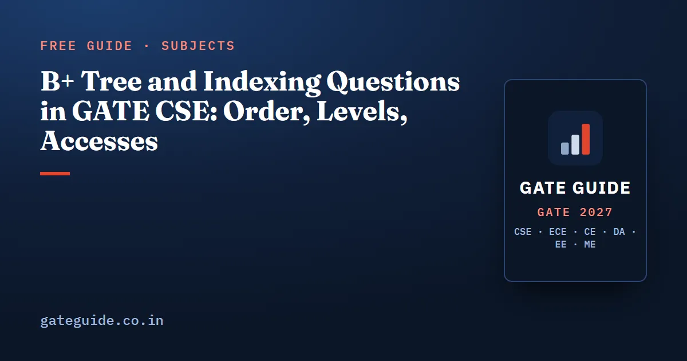

B+ Tree and Indexing Questions in GATE CSE: Order, Levels, Accesses

B+ tree questions in GATE CSE come in a small number of fixed shapes. You are given a block size, a key size and pointer sizes and asked how many keys fit in a node, how many levels a file of N records needs, or how many block accesses a lookup costs. Around those sit shorter items on dense and sparse indexes, B tree versus B+ tree properties, and the result of a sequence of insertions. The arithmetic is easy. The marks are lost on definitions.
In this guide
Key takeaways
- Internal node: , then take the floor.
- Leaf node: , then take the floor.
- Textbooks define order differently. The definition printed in the question overrides every textbook.
- Block accesses for a lookup equal the number of index levels plus one for the data block.
- A sparse index needs a file ordered on the indexed field. A secondary index is always dense.
Where indexing sits in the paper
The official 2027 CS syllabus lists "File organization, indexing (e.g., B and B+ trees)" in the Databases section. It is the only place the DBMS syllabus names a concrete example, which is one reason the topic scores well in any priority ranking.
Third-party analyst compilations put DBMS at 3 to 11 marks per paper from 2009 to 2026, settling at 7 to 8 marks in most papers since 2019. By the analyst reconstruction used here, some B+ tree item (capacity, height, insertion or a property statement) appears in roughly half to four fifths of papers. The capacity template is placed in 2010, 2015 Set 1 and 2020, with approximate placements earlier and in 2025. A disk-access count appears in 2020, a range query over the leaf chain in 2015 Set 2, and index-type definitions in 2011, 2013 and 2015 Set 2. These years are approximate reconstructions, not official data, and analysts differ by a mark or two on classification. Check the current notification for the pattern that applies to your year.
The rest of the subject is covered in the DBMS important topics guide.
The order convention, settled first
Before any arithmetic, decide what "order" means in the question you are reading. The standard textbooks do not agree.
| Source convention | What the number means | Keys in an internal node |
|---|---|---|
| Silberschatz, Korth and Sudarshan | Maximum pointers (children) per node | At most |
| Elmasri and Navathe | for internal nodes; a separate for leaf pairs | At most |
| Knuth, for B trees | Maximum children | At most |
| Cormen (minimum degree ) | Minimum children of a non-root node | Between and |
| Some older texts | Maximum keys per node | At most |
This guide uses the maximum-children convention, the one the formulas above assume. But GATE setters usually state the rule in full, for example "an internal node with child pointers holds keys", and when they do, that sentence wins. If a question gives only "order 5" and nothing else, read the options: one of them usually corresponds to each reading, which tells you the setter's intent.
Worked example: capacity, levels and accesses
These numbers are chosen for this guide. Block size 2048 bytes, search key 12 bytes, block pointer 6 bytes, record pointer 10 bytes.
Internal node
Take children and 113 keys. Check: bytes, which fits. With 115 children the node needs bytes, which does not.
Leaf node
Take keys, each with a record pointer, plus one pointer to the next leaf. Check: bytes. The common slip is to reuse 114 or 113 for the leaf. Leaves hold record pointers, which are a different size here, and they hold only one tree pointer.
Minimum occupancy
A non-root internal node needs at least children, so 56 keys. A leaf needs at least keys. The root is exempt: it needs only 2 children if it is internal.
Levels for one million records
Nodes as full as possible:
and 96 pointers fit in one root. That is 3 levels, so a point lookup costs 3 index block accesses plus 1 data block, which is .
Worst case, every node at its minimum (a root with 2 children, internal nodes with 57, leaves with 46 keys):
One million lies between the two, so the tree can reach 4 levels but not 5. The same file costs 4 accesses in the best case and 5 in the worst. Read whether the question says "as full as possible" or "in the worst case"; the answer depends on it.
The two formulas belong on your formula sheet next to the normal form checks.
Primary, clustering and secondary indexes
Index-type items are usually 1 mark and definitional, but a sizing variant turns them into a NAT. Three facts do most of the work.
- A primary index is built on the ordering key of a sorted file. It can be sparse: one entry per data block, the block anchor.
- A clustering index is built on an ordering field that is not a key. It has one entry per distinct value.
- A secondary index is on a field the file is not sorted by. It must be dense, and a file can carry many of them but only one clustered index.
Take a file of 60,000 records of 100 bytes in 2048-byte blocks, sorted on its key, with index entries of bytes. Data blocking factor , so data blocks. Index blocking factor .
| Access path | Index blocks | Block accesses for one record |
|---|---|---|
| Binary search on the sorted data file | none | |
| Sparse primary index, binary searched | ||
| Dense secondary index on a key field, binary searched | ||
| Multilevel on the sparse index () | ||
| Multilevel on the dense index () |
The pattern to notice: the dense index is about 20 times larger because it holds an entry per record rather than per block, yet going multilevel costs it only one extra access.
B tree versus B+ tree
Property statements from 2016 Set 1 and 2019 were built from exactly these differences.
| Property | B tree | B+ tree |
|---|---|---|
| Where data pointers live | Every node | Leaves only |
| Keys in internal nodes | Each key appears once | Separators, repeated in leaves |
| Leaf chain | No | Yes, leaves are linked |
| Range query | Tree traversal | Find first leaf, then follow the chain |
| Fan-out for a given block | Lower, nodes also store data pointers | Higher, internal nodes store only tree pointers |
| All leaves at the same depth | Yes | Yes |
Higher fan-out is why B+ trees are shallower on the same block size. One subtle statement setters like: an internal separator in a B+ tree need not match any key currently in a leaf, because deleting a leaf key does not require deleting its copy above.
Insertion and splits
Take a B+ tree whose nodes hold at most 3 keys, and insert 10, 20, 30, 40, 50, 60 in that order. The first three fill one leaf. Key 40 overflows it to four keys, so it splits into [10, 20] and [30, 40], and 30 is copied up into a new root. Keys 50 and 60 go to the right leaf, which overflows at 60 into [30, 40] and [50, 60], and 50 is copied up. The root is now [30, 50] over three leaves: two splits, four nodes, two levels.
The rule to hold on to: a leaf split copies the separator up and keeps it in the leaf, while an internal split pushes the middle key up and removes it from below. On an even split, the question says which side takes the extra key. Insertion drawings were last confidently placed in 2016 (approximate) and are on the book's list of topics due after a gap.
The traps in one list
- Reading "order" as maximum keys when the question means maximum children, or the reverse.
- Using the internal-node formula for leaves, or forgetting the leaf's sibling pointer.
- Rounding capacity up instead of down. A node that does not fit is not a node.
- Forgetting the extra access for the data block, or adding one when the question counts index blocks only.
- Building a sparse index on a field the file is not sorted by.
- Applying minimum-occupancy rules to the root.
The same arithmetic discipline matters in the SQL row-count questions, and the cross-subject version of this list is in common mistakes that cost marks in GATE CSE.
How to practise
Pick three block sizes and two key and pointer combinations, and for each compute internal capacity, leaf capacity, minimum occupancy and best and worst levels for one million records. Always write the byte check that confirms the answer fits. Then insert a sequence of eight keys into a tree with at most 3 keys per node and count the splits. The Databases chapter of the GATE CSE 2027 book works through every B+ tree and indexing variant in its question bank with the full arithmetic, including range queries over the leaf chain and deletion with borrow and merge, which this guide only names.
Frequently asked questions
How do you calculate the order of a B+ tree in GATE?
For an internal node with child pointers and keys, solve for and take the floor. For a leaf, solve , plus one sibling pointer, within the block. Always check whether the question calls the maximum children or the maximum keys.
What is the minimum number of keys in a B+ tree node?
Using the maximum-children convention with order , a non-root internal node has at least children, so one fewer keys. A leaf holding at most keys must hold at least . The root is the exception. It needs only two children if it is internal, and a root that is also a leaf may hold a single key.
What is the difference between a B tree and a B+ tree?
In a B tree every key appears once, and internal nodes carry data pointers, so a search can stop above the leaf level. In a B+ tree all data pointers sit in the leaves, internal keys act only as separators and are repeated in the leaves, and the leaves are linked in a chain. That chain is what makes range queries cheap in a B+ tree.
Why must a secondary index be dense?
A sparse index stores one entry per data block and relies on the file being sorted on the indexed field, so that a scan inside the located block finds the record. A secondary index is built on a field the file is not ordered by, so matching records can sit in any block. Every value therefore needs its own entry, which makes the index dense.
How many block accesses does a B+ tree search need?
A point lookup reads one node per level from the root down to the leaf, then one more block to fetch the record through the record pointer. A tree with three levels therefore costs four block accesses when nothing is cached. Questions that say the root is kept in memory reduce this by one, so read that condition before you add anything up.
Sources
- GATE 2027 official website (IIT Madras)
- GATE 2027 CS syllabus (official PDF)
- GeeksforGeeks subject-wise weightage for GATE CS
- GATE Overflow previous year questions
- ExamSIDE chapter-wise GATE CSE questions
Dates, fees and the syllabus are set by the GATE 2027 organising institute and can change. Always confirm at gate2027.iitm.ac.in.